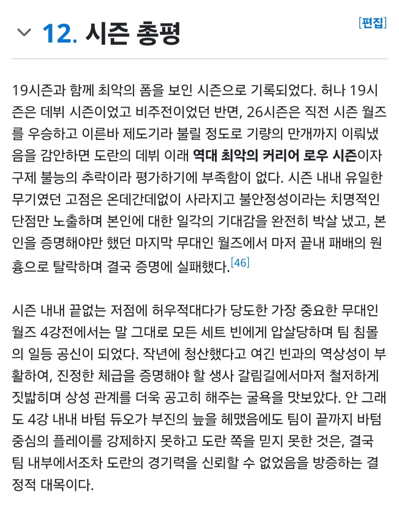
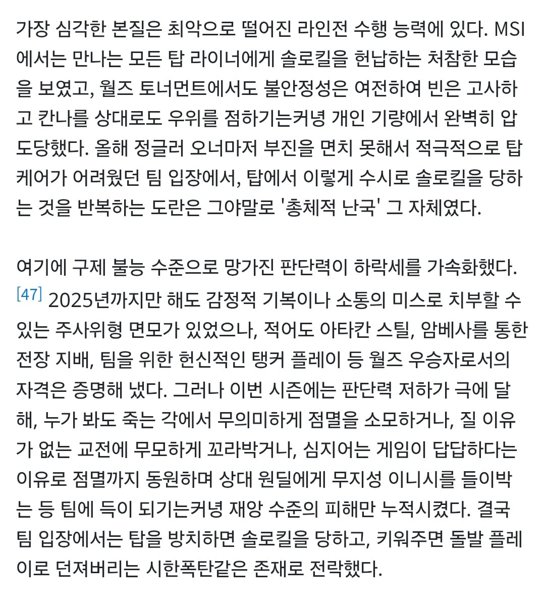
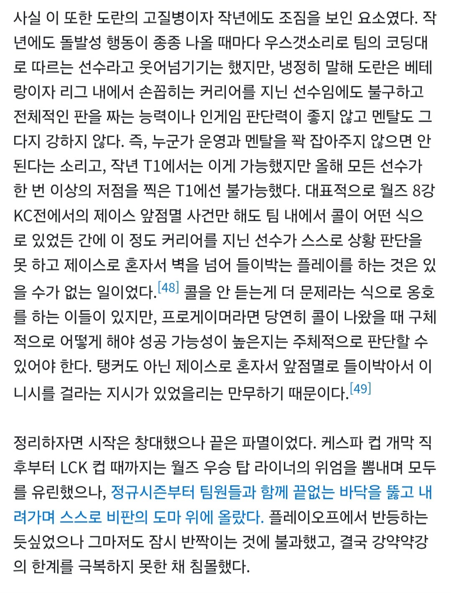
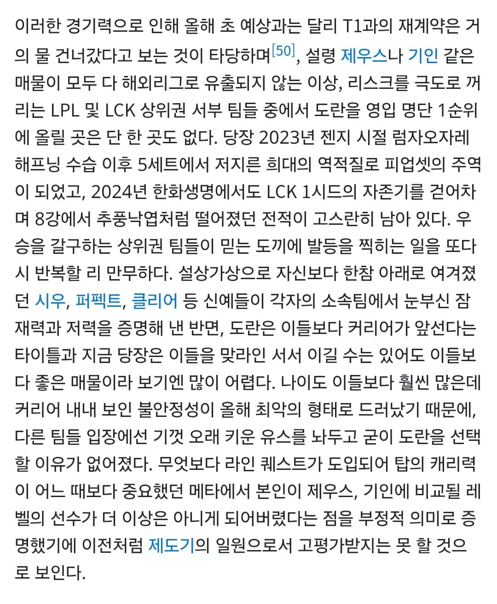
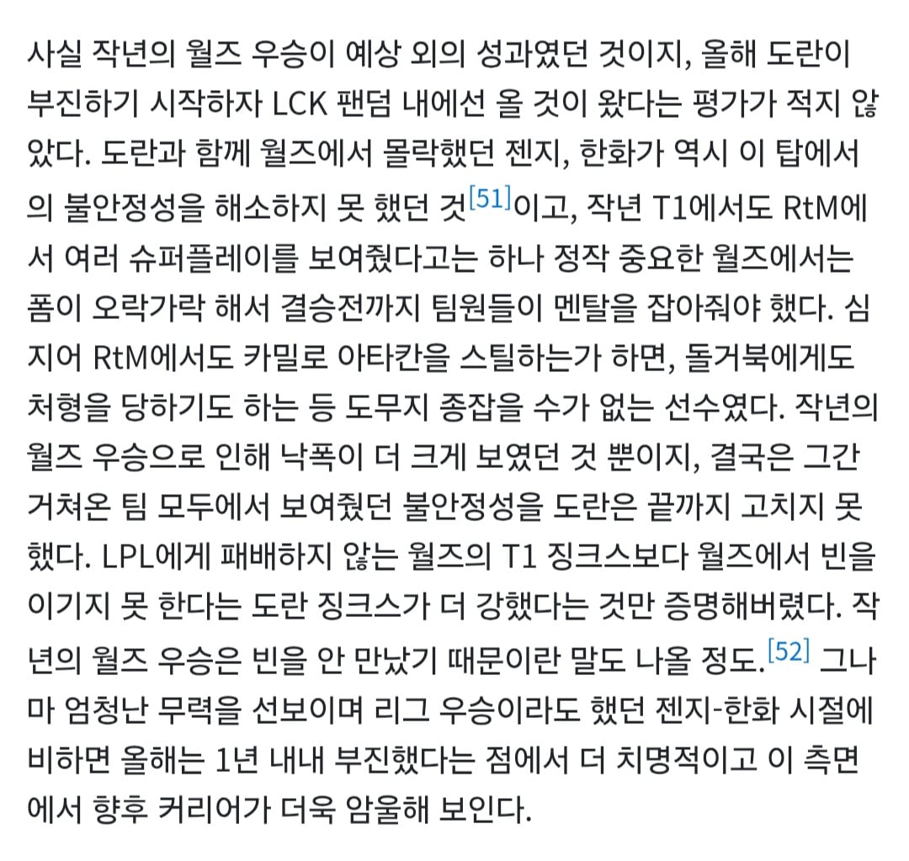
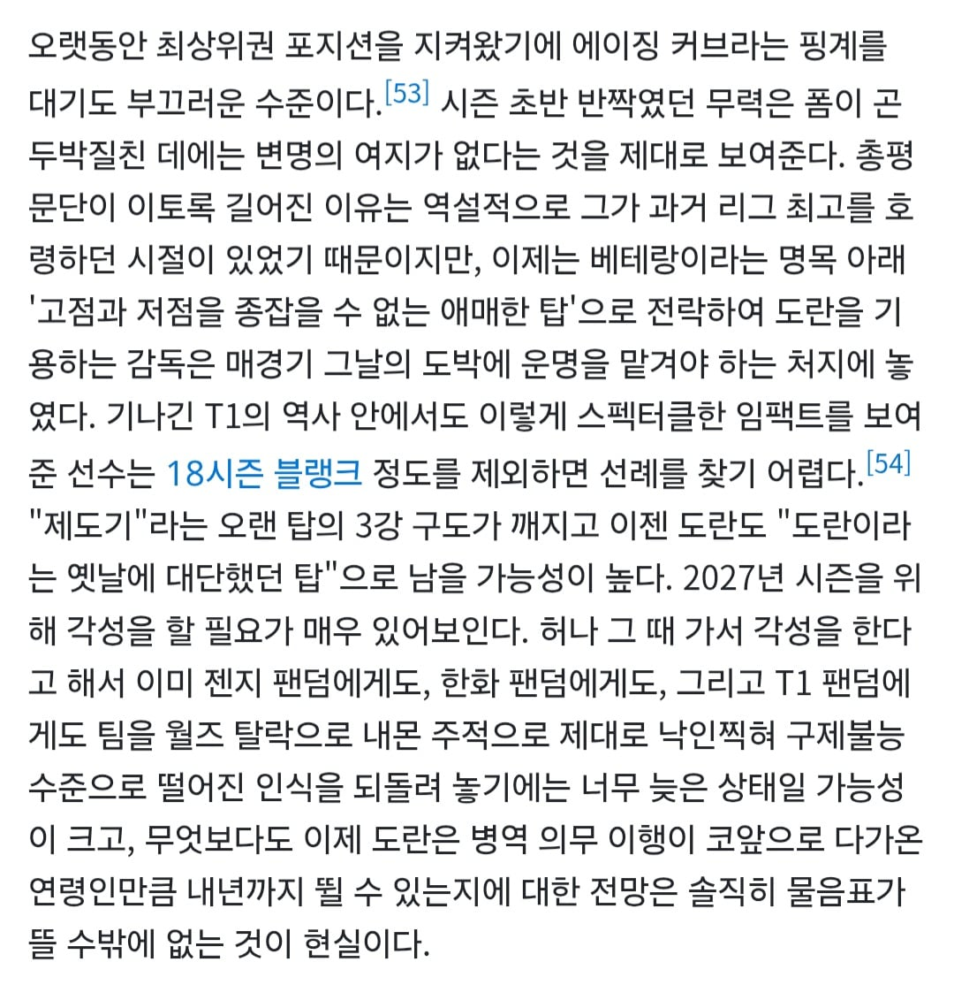
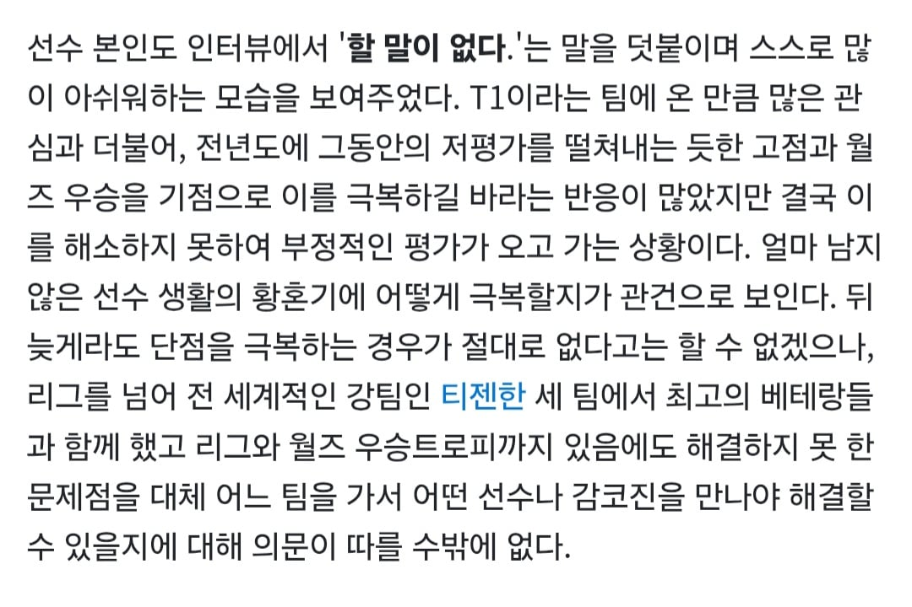

은퇴 하는건가







은퇴 하는건가
아시발 ai문체
데프트 말대로됏네
걍 개병신임
빅3 다돌았는데 빅3 팬 전부가 질색하면 선수가 문제가 있는게 아닐까? ㅋㅋ
도란 실드가 구조적으로 나올 수가 없음 실드 치는 애들은 게임을 안 보는 애들임.
게임을 봤는데도 실드가 나오는 애들은 잘 했는지 못 했는지도 판단이 안 되는 저능아라서 대화의 의미가 없음.
따라서 실드 댓글에 반박하는 것 자체가 실익이 없다 걍 무시해야 함.
젠지에있을땐 이거보다도 못했는데 티원가선 오히려 잘해진거임ㅋㅋㅋㅋㅋㅋㅋㅋㅋ
인과관계가 잘못되어있음
구마유시는 특출나게 멘탈이 강한 선수였고
도란은 특출나게 멘탈이 약한 선수였을 뿐임
1. 도란은 주사위를 굴린다고 표현할 정도로 주변환경에 영향을 많이 받음
2. 장점으로는 빠른 판단력과, 판단력에 근거하여 바로 행동할 수 있는 담대함등이 있었음
3. 단점으로는 컨디션에 영향을 많이 받고, 멘탈이 약한선수임
그런 선수를 씨바, 게임 판마다 까내리고
게임 분석한다며 저격하는 진영준같은 놈이 있는 상황에서 어떤 기량을 기대하라는 건지 모르겠음
공인인 프로게이머가 고소 스탭까지 밟는다는 상황을 전제해야함.
멘탈 약한 애를 하나만 실수해도 물어뜯기는 상황에 몰아놓고선
무슨 플레이를 기대할 수 있겠어?
나는 그저 안타까워 죽겠다
이렇게 병신취급받으면서 퇴장할 건 아니었음.
작년,제작년만해도 대황란 대황란 소리들으면서 게임했는데
당장 위에 적힌 아타칸 스틸만해도
어지간한 사람은 시도조차 못할 일임.
대역적으로 몰리는 건데.
이번 마지막판 베인은 어떻게 하겠냐,
그것 역시 지면 대역적인데
나는 그걸 스스로 극복하려고 하는 발버둥이었다고 봄.
너무 안타깝더라.
그렇다고 프로가 고연봉 받으면서 멘탈 터져서 히히발싸는 좀 그래
그냥 그게 한계였던거지,
안타깝다 나는.
쉽게 말해 좀 더 둥가둥가해줬으면 더 잘 할 선수였을거라고 봄
그래서 대황란 거리면서 페이커도 옆에 데리고 다녔을테고.
그래서 씨맥도 소드대신 도란을 기용했겠지
문제가 도란플레이스타일이 본인만의 각이 있는건 확실함.아타칸 스틸이 보통 프로가 못하는이유가 리스크 때문에 그러는건데 본인각으로 한거잖음?슈퍼플레이지 근데 슈퍼플레이가 왜 슈퍼 플레이라고하는거임 하이리스크 하이리턴이니까 슈퍼인거임.이게 조금만 엇나가도 쓰로잉이 되는데 도란은 그 쓰로잉 빈도가 너무 높음.시도를 안하면 리턴도 없다고 하는데 아주 사소한 손해도 패배로 직결되는 프로씬에서 슈퍼플레이 하겠다고 매우높은확률로 쓰로잉되는 플레이를 반복하는건 그냥 못하는거임.
당장 앞에 젠지 한화에서 왜 도란이 팬들한테 박한 평가를 받았냐 라는 이유도 직결되는데.
안정성이 너무 떨어짐.본인 고집도 강하고.
이게 이기는경기는 그려려니하는데 지는경기는 범인되기 딱좋은 스타일이라 어쩔수없음.
악질 유튜버 붙은건 진짜 졷같은건데.
프로인 이상 본인이 이렇게 하고 날선 비판은 받아들여야하는거같음 어화둥둥안했다고 멘탈깨지면.
그건 프로의 역량이 아닌거지.
물론 비판이 아니라 과한 인신모독과 비난은 잘못됫다고 생각하고.
이번 시즌 도란은...그냥 참담하다고밖에 말할수가 없을거같음.
그러니까 네 말대로 이야기하면
하이리스크를 지고서 하이리턴을 만들어는건 슈퍼플레이가 맞음.
그걸 할 수 있는 선수와 할 수 없는 선수는 선수 특성상 정해진다고 생각함
도란이전의 소드는 할 수 없었다고 봐야지.
도란은 네 말대로 자신만의 각을 만드는 선수였음. 그래서 씨맥이 채용했을거야.
문제는 그런 선수를 기를 죽여버린 행위에 있음.
멘탈이 약한선수한테 고민이나 부담을 넣어버렸으니 문제가 발생한 것임
A라는 선수가 100번의 슈퍼플레이를 해서 50번을 성공했다고 치자,
이건 진짜 대단한거라고 봄
남들은 기피하는 것에서 뭔가 각을 본거니까.
그걸 50번이나 성공한거니까.
근데 지금 현상황은 실패한 50번을 잡고 왜 이랬니, 저랬니 점멸은 어땠니 하니까
얘가 병신이 된거라고 생각함.
이걸 프로의 역량이라고 생각하기보다는
내 생각에는 실패를 잡아 끌고 사람 하나를 묻어버린 것 같음.
다양한 가능성을 짓밟는 것을 실시간으로 보는느낌이야.
그래서 안타까움. 응원하고 싶고.
예전에는 그게 10번하면 3번은 됬는데 지금은 10번하면 1번 될까말까하는거면 안해야하는게 맞는거아님? 네가 뭘 착각하고 있는거같은데.
프로는 같이 성장하고 가능성을 믿는자리가 아니라
증명하는 자리임.
가능성이든 성장력이든 그건 코치진이 결정하는거고
증명하는 자리인거 ㅇㅋ
이전에 보여준게 없음? -> 난 아니라고 생각함 (아타칸 스킬등)
근데 왜 지금은 못함? -> 멘탈이 약해서 그럼
멘탈을 약하게 한 건 누구임? -> 팬이라고 칭하는 악질유튜버 포함한 놈들임
그걸 왜 그렇게 생각함? -> 프로게이머가 고소언급까지 할 정도고 플레이 하나하나 분석을 때려놨기 때문임
(메시나 손흥민이 골 못 넣었을 때마다 리플 돌리면서 왼발은 어떻고 오른발은 어떻고 하는 걸 사람들이 받아들이고 있기 때문)
이해가 어렵나?
멘탈 약한놈을 외부에서 물어뜯었다고.
멘탈 약한애를 왜 데려왔음? -> 제우스가 트러블일으키고 나갔으니까
멘탈 약하고 증명못하면 도태되는거 아님? -> 맞음, 다만 외부 압력이 쎘기 때문에 본인의 실력을 못 보여주고 나가는 것 같아서 보여서 안타까움.
다른 놈들이 팬이라는 가면쓰고 말하는건 도란맘으로 취급하면서
악질적으로 돌려까는 것을 버티지 못하는 선수인데,
그 선수가 그러면 잠재력이 없었냐 하면 그것도 아님
팀으로써 융화시키고 좀 보듬었으면, 도란은 좋은 카드가 됐을거라는 소리임
그놈의 시바, 증명하는 자리
다 데려다놓고 자신의 일을 어떻게 하는지 증명시켜놔야함
얼마나 실수 없이 인생 잘 살고 있는가,
도전하지 않는 사람을 비난할 수는 있어도
도전하고 실패한 사람은 비난하면 안되는 것임.
도란은 내가 느끼기에 항상 미움 받는 자리에서 제 몫을 하던 선수였음.
그걸 강제로 미움으로 덮어버리니 그렇지.
결과론적으로 극복을 못했기 때문에 문제가 있다고 말하는 것보다
고생했다고 어깨 두드려주고 싶다고.
내가 어려운 말 하냐.
아무리봐도 걍 너가 그냥 도란한테 본인을 투영하고있는데 이번시즌내내 솔직히 2군대체 되도 할말없는 경기력이 대부분인데.스포츠팬이 어캐 1년내내 감싸주고 다독임?
그리고 제우스가 트러블일으키고 나갔다고?ㅋㅋ
맙소사...
그리고 물어뜯어서 약한멘탈 못해서 무너졌다하는데 그러면 프로를 하면 안되지
내가 기준이 높은게 아니라 프로라는건 그런거임.
태윤만봐도 스크림에선 날아다닌다해도 무대 울렁증때문에 박으니까 중국갔잖아.
쵸비도 유독 월드에서 힘을 못쓰니까 욕먹고.
프로답게 경기해야지 멘탈흔들린다고 못하면
그게 그냥 실력이라니까?
그럼 실력 비판은 받아들여야지.
뭐얼마나 더 어화둥둥해야함?
앞서 이야기한거처럼 과한 비난이랑 악질 유튜버는 에바라고 나도 생각하는데 그게 다른선수도 안붙음? 쵸비 팔팔따리 Ai노래부터 페이커 돌리는 물로켓소리부터 구마는 아예 마갤자체가 악질인데
개내는 뭐가되는거임?
그리고 막말로 도란지금 빅3 클럽 다돌았는데 왜 도란 돌아오길 원하는 팀팬이 없겠음?
개내가 악질이고 개내가 잘못한거임?
뭐 어화둥둥하고 다독여주고 그건 팀내부에서 코치랑 감독이 해결해야할 문제고.
보는 팬입장엔 그냥 증명만 해야지.
그게 스포츠고 프로다운거지.
결국 프로스포츠에서 선수를 증명하는건 실력인데
그걸 이번 1년 내내 박았으니.
평가는 본인이 감당해야지.
내가 지금 억지로 까대고 악질유튜버들 옹호하는게 아니잖음?
못한걸 못했다 하는건데. 뭐 어쩌란거.
멘탈약한건 본인이 해결할 문제지 인터넷을 끊든가
문제가있는걸 문제다라고 말하는것도 잘못임?
제우스가 트러블 있던게 아니면 뭐냐?
제우스 한화 이적 나오기전까지만해도 템퍼링이다 뭐다 난리였는데
이건 선수 개인의 문제가 아니다?
뭐 좋다.
말을 알아듣기 쉽게 다 적어도 이해를 못하니
아니 그냥 이해못하는척을 하는거냐?
각 선수가 문제가 생긴다 -> 문제에 대처한다는 당연하다
누가 멘탈이약해 중국을 가고 말고,
실력이 부족하면 프로씬에서 제제받거나 도태되는건 당연하다
근데 도란은 도를 넘어서 사람들이 갈궈댄다고
뭐든 스코프 쬐고 쳐다보는 와중에서는 사람이 병신이된다고
네가 군대를 다녀왔는지는 모르겠는데
군대에서 그런 경험 한 적없냐?
긴장되고 뭐하고 하면 단순한일도 힘들어지는 그런 경험 말하는거다.
다 떠나서 이렇게 말해도 이해를 못하면
어쩔 수 없다, 말의 논지도 이해를 못하는데
그러니 넌 꼭 다 증명하고 살아라 ㅇㅋ?
도마 위에 언젠간 올라갈 일이 있길 빈다.
아직도 제우스 템퍼링 드립을 믿네...그냥 네가 악질이였구나.
제우스는 다년계약원했고 페이컷도 한다했는데
티원이 돈없어서 꺼지라했고 한화는 그런 제우스를 데려갔음 정식절차로.
그뒤로 티원 프론트에서 제우스 묻으려고 정치질한건데 무슨 제우스 선수 개인의 문제임????
내가 증명할필요없지 난 프로아닌데??
말의 요지는 네가 이해못하는거같은데.
아무리 니가 극악질팬이라도 갠 다른 남인데
본인 투영을 적당히 하셈
네 말을 부정했다고 도마에올라간다느니
저주를 퍼붇는 한심한 녀석아 ㅋㅋ
IF는 없어 결과로 증명해야지.
왜이렇게 도란한테만 넉넉하니 다른 사이버불링 당한 선수는 멘탈이 강한갑다 넘어가고 ㅋㅋ
걍 이번시리즈 내내 못했음 아쉽네.
할걸 구구절절 헛소리를 반복해.
앵무새임?
아예 글을 못 읽는구나
대화를 하려고 했던 내가 잘못했다.
템퍼링 드립이아니라, 이슈가 있었단 소리임.
머저리새끼야.
멘탈 약한애를 왜 데려왔음? -> 제우스가 트러블일으키고 나갔으니까
제우스가 트러블 있던게 아니면 뭐냐?
뭐 더 니말 긁어와?
왜 니가 쓴글도 기억을 못해.
진짜 병신임?더 웃긴건
니가 졷병신같이 글배설놓고 이슈였어요~
말돌리려는거임.
졷병신새끼야 ㅋㅋ
지부터 인과관계니 어쩌구 개헛소리 늘어놓곤
이제와선 안타까운게 잘못임? ㅇㅈㄹ하네
진짜 글못읽음?
본인투영아니면 뭐임?
니가 도란임? 관계자들도 멘탈이슈'인듯'
유추하는걸 지는
멘탈이 약하니 그걸 물어뜯어서 못하는거니...
구구절절 그냥 본인이 도란 그자체인데.
이게 본인투영이 아니면 뭐냔말임 ㅋㅋ
걍 장애가 있는 친구인거 같은데.
다음부터 그냥 댓을 쓰지마.
대댓달리는거 이해도 못하고 이해도 안할거면.
할줄아는 말이 본인투영이 전부임?
내가 도란을 뭘 투영을 함ㅋㅋㅋ
지혼자 말하고 아주 사실인양 계속 이야기하는꼴이 우습네.
안타까워하는게 잘못됨?
별 병신같은 놈이 계속 물고늘어지네, 일봐라 댓글 안달란다.
내가 잘못했다 니가 이김
멋있음 그렇게 쭉 살어.
됐다 걍 니가 이긴걸로 해라
니 말대로 인터넷선 자르고 게임했어야했는데
그게 안됐나 봄
도란이 병신인가보다
넌 병신하지말고 인터넷선 끊어라.
월즈는 고점을 다투는 곳임
도란의 고점은 다른 탑보다 높음
근데 다른 탑보다 낮은 평균과 파멸적인 저점을 함께 보유한 선수
이번에는 고점이 전혀 안떠줬을 뿐
글쎄다 당장 작년 우승했는데 그동안 은퇴한 선수들 보면 이것보다 훨씬 더 조용하고 슬프게 사라짐...
도란이 지금 진짜 제일 못한 건 맞는데
전 라인이 그냥 개박살나서 답도 없었음.
페이커는 신드라 아칼리판 잘해서 뭐... 5명중에선 그나마 무죄라 생각하고
바텀듀오는 상체 때문에 망했다도르로 아무 이야기 없는데
페이커도 1세트부터 라인전 그대로 짓눌렸고 3세트 아리 짤린거때문에 그대로 겜 넘어가고
페이즈 케리아도 자원 싹 몰아줬는데 그대로 반반/짖눌림
이길수가 없음 그냥 경기보면
갓구나이트랑 비교할 라인에 오른거면 진짜 재계약은 날라갔네
돌거북한테 죽을 때 이미 알아봤음
근데 이번시즌 피솔킬이 너무 많긴 했어
도란 티원 처음에 왔을때 응원했음.. 그런데 보다보니 너무 이상함. 그냥 머리로 플레이 안하고 지 멋대로 플레이하는 느낌. 특히 점멸 쓰고 살지도않고 점멸 아끼고 뒤지지도않고 점멸쓰고 뒤지는게 너무 많음